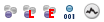

Please note that this is document is the 1st draft. Text in italics (not using the em tag) are author's notes. Any and all feedback would be appreciated.
The World Wind Animator was written so that Geoscience Australia could create fly-through footage showing geological information for use as a visual communication tool. The animator was originally developed using NASA's World Wind Java SDK, allowing it to be used on a wider range of platforms. The animator works by setting keyframes for the parameters of the different layers.
Data sets are rather large; Each can take up several Terabytes of space. As such the default data sets are stored on servers, located at Geoscience and NASA, and the World Wind Animator only access the data as it needs to, pulling the required data down over the network as the camera brings it into view.
Visually, The dominate feature of the Animator is the viewport. On opening it should display a view of the earth from space. The viewport shows the camera's current view. To the left of the viewport is a panel containing three rollouts. The Animation Browser, Properties and Layer Palette. These are used to interact with layers and datasets. Below the viewport is the time slider; A drag bar marking a position on a number line. This is used to mark the time a property changes, while animating.
The viewport has crosshairs in the center. These mark the target location on the ground, where the camera is looking. In order to move that location, drag the mouse around the viewport while holding the left mouse button down. This can also be achieved with the arrow buttons on the keyboard. This is called Panning the camera. It is important to note that the camera does not pan relative to it's own position, as one might expect. It instead pans the position relevant to the ground, effectively keeping the camera target on the ground.
Zooming can be achieved in two ways. First, the mouse wheel can be spun, moving the camera toward or away from the earth in increments. This is not a smooth process; the camera jumps up and down as the wheel moves. In order to zoom smoothly the mouse wheel can be used as a middle mouse button. Holding it down while moving the mouse up and down will zoom the camera smoothly, forward and backward.
To change the angle of the camera, hold the right mouse button down and drag the mouse around the viewport. Doing this will rotate the camera around the target, marked by the crosshairs in middle of the viewport.
The earth, in the World Wind Animator, is made up of different data sets. The top rollout in the side panel, labeled Animation Browser, contains a list of the different objects within the scene that make up the animation. Each list item, displayed under the World Wind Animator, has three buttons, an icon and a name: An expand button, like the one in windows explorer, which either expands or collapses properties belonging to the object in the list item; A checkbox, marking whether or not the object is currently active; A coloured letter a in a circle, marking whether or not the item is armed; the icon marking what kind of object the list item is; and the name.
When an object is armed, new keyframes can be created for the object. This is discussed further in the animation chapter.
The object's icon shows what the object is. If the icon is made up of three balls, the one in front being blue and the others being faded, then it is an animatable object. If that icon has a red L in the foreground, then it an animatable layer. If the letter is an E, then it is an elevation layer. If the icon has a single blue ball with the number 001 underneath it, then it is an animatable property.
Expanding an object displays any properties the object has in the list. This can be useful for enabling/disabling different properties in an object, such as the camera's clipping properties.
The animation browser has it's own toolbar, at the top of the rollout. It allows the removal of an object from the list; Repositioning of an object in the list; The mass enabling/disabling and arming/disarming of objects.
The order the layers affects how they are displayed. If the layer Landsat is below the layer Blue Marble in the list, and it's opacity is set to .5, then the world image is blended 50/50 between the Blue Marble Layer and the Landsat layer. If however, The Blue Marble layer is below the Landsat layer, then there will be no visible difference, as each item on the list is overlaid onto the previous layer.
Layers can have multiple properties. At the time of writing the camera has eight different properties. When an object is selected in the animation browser, any properties it has are displayed in the properties rollout. If the object is itself a property, then it is displayed in the properties rollout. Changes to the properties values can be animated.
The layer palette, bellow the Properties rollout, contains a list of known layers that can be added to the animation. The layers currently in the scene are marked with a yellow flag. In order to add a layer to the animation, there is a green plus button to the right of the rollouts toolbar, directly above the scroller. The red x in the layer palette toolbar removes layers from the pallet, not from the scene. The box with the arrow pointing into it is the add layer button, from an XML file.
Layers are specified in XML files. They contain information about the layer's type, where to get any data and how to interpret any data referenced. Because datasets can be rather large, and one is unlikely to work with the whole dataset, they are often stored on a remote server, and are retrieved in segments when needed. An XML layer file may also be dragged directly into the animation browser list, to be added to the animation.
Animation is done by keyframing changes to parameters. Moving the camera changes it's positional parameters. The timeline at the bottom of the camera viewport displays the keyframes that make up the animation.
The World Wind Animator supports keyframes; Specific frames which determine the overall animation. By default the timeslider only has one hundred frames. The number can be changed with the set frame count dialog, found in the frame menu.
The insert button on the keyboard, or the Frame → Add key menu item, inserts a new keyframe for all armed objects. If an object is armed, any keyframe that can be applied to it will be. Unarmed objects do not recieve keyframes.
Most of the animation within the animator will revolve around layer parameters. Most layers have an opacity layer, which is a value between 0 and 1 that represents how transparant or visible the layer is. In order to add a keyframe modifing a parameter, change the parameter and then add the new keyframe. The view may not update with the changes to the parameter until the the keyframe has been added.
Each keyframe will visibly appear on the timeslider, marking which frames are keyed. These frames can be dragged along the slider.
The camera is an animatable object within the scene. It is made up of an Eye, the camera itself, and a look at target. The look at target is always aligned to the ground, and the camera rotates around it. Each have latitude, longitude and zoom parameters. It also has additional parameters controlling stereo cameras and clipping which can be added to it from the animation menu. It can be moved as described in the Interface chapter, or the parameters can be manually changed.

When a keyframe has been added to the camera, the camera's position becomes visible in the viewport. Immediately after a keyframe has been inserted, a pink dot will appear in the center of the crosshairs. If the viewport is moved away from the camera's position, two dots, a blue and a pink one, should be visible. They will be joined by a dotted line. The blue dot represents the camera's eye, while the pink dot represents the target.
When the camera has multiple keyframes, they will all be visible within the viewport, joined together by lines showing the their trajectories. The lines colour will vary between blue, where the movement is slow, and red, where the movement is quick.
To edit keyframes, the position of the camera can be changed by either moving the camera and pressing the insert button, or by grabbing and moving the visual representation. You can grab both the camera and the target using the left mouse button and change their latitude and longitude, or with the right mouse button and change their zoom.

The parameter editor, found in the Window menu or by clicking Ctrl+P, shows the changes made to parameters between different keyframes as a graph. On the left is a list of all the parameters in the scene that can be displayed. The gray area to the right displays a graph, once a parameter is selected.
The line represents the value of the parameter, and each point along it is a keyframe. Each keyframe that has one or two lines coming off it, each with its own handle. These lines are bezier handles. Moving them affects the curve of the line between the keys. By default each bezier handle controls both the input and the output direction of the key. This can be changed by right clicking on the key and choosing bezier (unlocked). There is also a linear option, which takes the input and sends the output directly toward the previous/next key.
There are two lines that go vertical across all open graphs. The red line is positioned at the current frame and the blue line is the closest frame to the current mouse position. The parameters values at those points are shown at the bottom right of the graph.
Navigating a graph can be done by holding down the mouse wheel (middle mouse button) and dragging the mouse around a graph. Rolling the wheel zooms, or by using the buttons on the toolbar at the top of the window. In order to stay in line, all the graphs will zoom and pan together.
Rendering is the process of creating a final film. In the animation menu, there are three options: Render, Quick Render (detailed) and Quick Render (preview). The Quick Render functions ask for a filename and then render an image set from the current frame to the end of the range. If they already have a destination filename then the quick render will just overwrite existing files. The render button opens a dialog which asks for Dimensions, Level of Detail, Frame Range and destination.

The dimensions of the image to render are in pixels, and also correspond to the size of the animator viewport. If set to 640 by 480, then the viewport will shrink to that size when the render button is pressed. By default, the aspect ratio is locked, so that when either the width or height is changed, the other will change as well. The scale changes the output size. The render size is displayed next to the scale box.
The level of detail (LOD) determines at what distance which LOD will be displayed. The terrain is generated by applying a hightmap to a mesh. There are several hightmaps, some more detailed that others. The camera distance is used to determine which is used, as well as the density of the mesh.
The World Wind Animator currently only renders out image sets. The output field in the destination panel points to the common prefix of each image. If the output reads c:\temp\camera\frame_ and you are rendering a hundred frames, then each frame will be rendered in c:\temp\camera\ as frame_001.tga, frame_002.tga... Any non-existing directories listed in the output will be created. If a full path is not specified, it will attempt to save the files in the directory that the animator is run from.
The illusion of a 3D image is commonly created in film with stereoscopic footage: Two separate images or film channels that are slightly off sync, in order to simulate a human eye. The World Wind Animator allows rendering of stereoscopic footage, rendering from two extra cameras on either side of the one used for the viewport. To use the stereoscopic cameras, select the Use stereo camera option from the animation menu. This will add two new parameters to the camera: Focal Length and Eye Separation.
The Focal Length is the point in front of the camera that the two camera's lines of sight converge, and then Eye Separation is the distance between the two eyes. These two parameters can be edited as per other parameters, but there is also a Dynamic Stereo parameters option in the Animation menu, which is checked by default. It attempts to animate the parameters dynamically according to the position of terrain in order to keep the focus sane.
When setting file names for the stereo projection, it creates two directories using the prefix with _left and _right, and separates the video channels into these directories.
{kind=link}